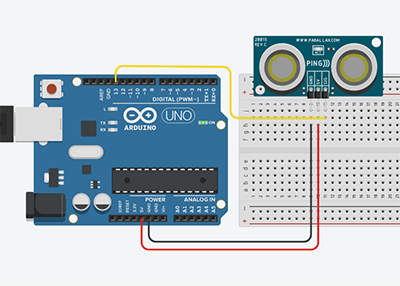

Arduino
Open Source Hardware.

¿Qué es Arduino?
Byte & Pines
Sensores & Actuadores

Analog

Control

Control

Un botón

Infrarrojos

Ultrasonidos

TB6612FNG


Contacto
444cuatro@gmail.com
¿Qué es Arduino?
Open Source Hardware
Hola y bienvenidos a este tutorial de Arduino, comenzemos por una breve
explicación de

Uno ejemplos son:
Las impresoras 3D (reprap.org)
Los drones (ardupilot.org).
La robótica educativa (mClon) donde lideran sin duda el mercado.
Estos proyectos evolucionan rápidamente gracias a la participación de extensas comunidades.

Disponemos de una extensa variedad de tarjetas electónicas de prototipado Open Souce, pero sin duda el Arduino Uno sigue siendo la mejor opción para comenzar a crear los primeros proyectos, es económica, disponemos de una extensa documenación y shields (extensiones) que añaden nuevas funcionalidades.

Este es un Arduino Uno original con su protoboard.

Es una tarjeta electrónica que funciona al igual que un ordenador. La clave es su microchip el ATmega 328P, que es un circuito integrado con memorias, procesador y pines de entradas y salidas.

El diseño de la tarjeta de Arduino Uno nos facilita el acceder a su microchip a través de un puerto USB, alimentarlo con un conector de 5 a 12 voltios y nos etiqueta los pines de conexión.
Continua con el siguiente tutorial
Byte & Pines
Conceptos Básicos I
Byte
El byte es la unidad de información digital formada generalmente por ocho bits (serie de ceros y unos). Estos 8 bits permiten 256 combinaciones. El byte es la unidad que las computadoras utilizan para representar un caracter como una letra, un número y otros símbolos. El byte es la unidad de datos más pequeña con significado y la menor unidad de memoria.

Es uno de los fundamentos del IDE de arduino (Integrated Development Environment o Entorno de Desarrollo Integrado) trabajaremos con bytes para controlar los pines PWM (pulse width modulation o modulación por ancho de pulso) que explicaremos más adelante. Otra relación con los bytes es que cada byte representa un carácter o una tecla o grupo de teclas
PWM (puse with modulation)
Para emular una señal analógica se cambia el ciclo de trabajo (el tiempo que permanece encendido y apagado de tal forma que el valor promedio de la señal sea el voltaje aproximado que se desea obtener, pudiendo entonces enviar hasta 256 voltajes diferentes entre 0 y 5 voltios.

PINES DE ARDUINO
En arduino encontramos 3 tipos de pines.
Sensores & Actuadores
Conceptos Básicos II
Sensores
Un sensor es un dispositivo con alguna propiedad eléctrica capaz de detectar magnitudes físicas o químicas, por ejemplo, la temperatura, una distancia, intensidad lumínica, aceleración, inclinación…
En arduino se configuran siempre como entrada y nos proporciona información que procesaremos generalmente para dar una respuesta a un actuador/es.
En róbotica educativa se utilizan mucho los sensores de ultrasonidos (HC-SR04) para evitar obstáculos y los infrarrojos(TCRT5000) para seguir líneas. Otros muy utilizados en kits de iniciación son el de temperatura (TMP36), temperatura y humedad (DHT11) y fotoresistencia LDR.
Actuadores
Por otro lado los actuadores son la respuesta al procesamiento de la programación transformando un valor digital o seudoanalógico (PWM) en un movimiento mecánico (motores, servos ...), la producción de sonido (buzzers)...
En arduino los programaremos junto con sensores para dar algún tipo de respuesta con la información que nos proporcionan, por ejemplo, con los sensores de ultrasonidos podríamos detectar un obstáculo y hacer que retroceda y gire robot para salvarlo.
En robótica educativa los que más solemos utilizar son los motores, los servos, buzzer y leds
Blink
Blink
Instalación
Arduino IDE Software descargaremos la aplicación (lo tenemos en varias plataformas) para realizar nuestros "sketch" que es como arduino llama a los proyectos. Una vez instalado en nuestro sistema lo abrimos y como observamos en la foto vamos a comenzar por seleccionar el sketch de ejemplo de blink (el parpadeo de un led)

Lo primero que tenemos que hacer para comprobar que nuestra computadora reconoce nuestra tarjeta
arduino uno es comprobar en el despegable de


Blink Sketch
/*
Blink (Parpadeo)
Enciende un LED por un segundo, luego lo apaga por otro segundo, repetidamente.
La mayoría de los Arduinos tienen un LED incorporado que puede controlar. En el ARDUINO UNO,
MEGA y CERO está conectado al pin digital 13, en MKR1000 en el pin 6. LED_BUILTIN está
configurado en el pin LED correcto independientemente de qué placa se use.Si desea saber a
qué pin está conectado el LED incorporado en su modelo de Arduino consulte las
especificaciones técnicas de su placa en:
https://www.arduino.cc/en/Main/Products
modified 8 May 2014
by Scott Fitzgerald
modified 2 Sep 2016
by Arturo Guadalupi
modified 8 Sep 2016
by Colby Newman
Este código de ejemplo es de dominio público.
http://www.arduino.cc/en/Tutorial/Blink
*/
// la función setup se ejecuta una vez cunado presionamos reset o cuando se enciende la tarjeta
void setup() {
// inicializamos el pin digital LED_BUILTIN como salida
pinMode(LED_BUILTIN, OUTPUT);
}
// la función loop se ejecuta una y otra vez continuamente
void loop() {
digitalWrite(LED_BUILTIN, HIGH); // enciende el LED (HIGH está recibiendo voltaje)
delay(1000); // espera un segundo
digitalWrite(LED_BUILTIN, LOW); // apaga el LED (LOW no tiene voltaje)
delay(1000); // espera un segundo
}
Este sin duda es el
Descodificando
En un "skech" diferenciamos tres partes:
El
La función
Dentro de esta función a través de la función
La función loop () hace exactamente lo que sugiere su nombre y realiza bucles consecutivos, permitiendo actualizar los cambios (lectura de sensores) y las respuestas (escritura de actuadores).
El
Esto visto así por primera vez es difícil de comprender pero viendo los ejemplos cogerá rápidamente sentido.
Pueba a modificar el tiempo y observa el led
void loop() {
digitalWrite(LED_BUILTIN, HIGH); // enciende el LED (HIGH está recibiendo voltaje)
delay(2000); // espera un segundo
digitalWrite(LED_BUILTIN, LOW); // apaga el LED (LOW no tiene voltaje)
delay(500); // espera un segundo
}
y cárgalo en la tarjeta pulsando la flecha
Básicos
DigitalReadSerial
Sketch
/*
DigitalReadSerial
Reads a digital input on pin 2, prints the result to the Serial Monitor
This example code is in the public domain.
http://www.arduino.cc/en/Tutorial/DigitalReadSerial
*/
// digital pin 2 has a pushbutton attached to it. Give it a name:
int pushButton = 2;
// the setup routine runs once when you press reset:
void setup() {
// initialize serial communication at 9600 bits per second:
Serial.begin(9600);
// make the pushbutton's pin an input:
pinMode(pushButton, INPUT);
}
// the loop routine runs over and over again forever:
void loop() {
// read the input pin:
int buttonState = digitalRead(pushButton);
// print out the state of the button:
Serial.println(buttonState);
delay(1); // delay in between reads for stability
}
2 - En el
void setup(){
pinMode(LedPin,OUTPUT); // Salida Digital
pinMode(BotonPin,INPUT); // Entrada Digital
}
En el
3 - digitalRead()
valor = digitalRead(BotonPin); // Leemos el estado del boton HIHG/LOW
Lee el valor/estado del pin digital. Su valor será HIGH o LOW.
digitalRead(pin)
4 - digitalWrite()
Escribe un valor HIGH o un LOW en un pin digital.
digitalWrite(LedPin,HIGH);} // Encendemos el LED
digitalWrite(pin, value)
void loop(){
valor = digitalRead(BotonPin); // Leemos el estado del boton HIHG/LOW
if (valor == HIGH){ // Condición si valor es igual a HIGH
digitalWrite(LedPin,HIGH);} // Encendemos el LED
else { digitalWrite(LedPin,LOW);} // Sino, apagamos el LED
}
El en loop() encontramos la primera una estructura de control
5 - if
La estructura de control if verifica si se cumple una condición y ejecuta una declaración o el conjunto de declaraciónes.
if (condición) {//declaración(s)}
(condición): una expresión booleana (es decir, puede ser verdadero o falso).
Otra estructura de control:
6 - else
Con la estructura de control else se puede proceder con otra prueba
else if (condición 2) {//declaración(s)}
Igual que
Podemos probar con motores, buzzers y otros actuadores que admitan valores analógicos.
Analógico
AnalogInOutSerial
Sketch
/*
Analog input, analog output, serial output
Reads an analog input pin, maps the result to a range from 0 to 255 and uses
the result to set the pulse width modulation (PWM) of an output pin.
Also prints the results to the Serial Monitor.
The circuit:
- potentiometer connected to analog pin 0.
Center pin of the potentiometer goes to the analog pin.
side pins of the potentiometer go to +5V and ground
- LED connected from digital pin 9 to ground
created 29 Dec. 2008
modified 9 Apr 2012
by Tom Igoe
This example code is in the public domain.
http://www.arduino.cc/en/Tutorial/AnalogInOutSerial
*/
// These constants won't change. They're used to give names to the pins used:
const int analogInPin = A0; // Analog input pin that the potentiometer is attached to
const int analogOutPin = 9; // Analog output pin that the LED is attached to
int sensorValue = 0; // value read from the pot
int outputValue = 0; // value output to the PWM (analog out)
void setup() {
// initialize serial communications at 9600 bps:
Serial.begin(9600);
}
void loop() {
// read the analog in value:
sensorValue = analogRead(analogInPin);
// map it to the range of the analog out:
outputValue = map(sensorValue, 0, 1023, 0, 255);
// change the analog out value:
analogWrite(analogOutPin, outputValue);
// print the results to the Serial Monitor:
Serial.print("sensor = ");
Serial.print(sensorValue);
Serial.print("\t output = ");
Serial.println(outputValue);
// wait 2 milliseconds before the next loop for the analog-to-digital
// converter to settle after the last reading:
delay(2);
}
1 - Asignamos el
const int PotPin = 0; // Asigna el potenciómetro al pin A0 (analoógico) de 0 a 1023.
2- El
3 - Declaramos la
4 - Especificamos que el pin del potenciómetro es de
5 - Iniciamos la comunicación
const int LedPin = 11; // Asigna el Led al pin ~11(PWM) byte de 0 a 255.
Vayamos a la página oficial de arduino y veamos lo que nos dice sobre:
Variables
#define nombreConstante valor
#define LedPin 11
// Asigna al Led el Pin 11
En este ejemplo encontramos esta variable (contradictorio por ser una constante) que suele ser la mas habitual:
const int NombreActuador/Sensor = PinNumero;
const int LedPin = 11;
// Asigna al Led el Pin 11
Por último la otra forma de encontrarla es con una variable tipo:
int NombreActuador/Sensor = PinNumero;
int LedPin = 11;
// Asigna al Led el Pin 11
6 - analogRead()
valor = analogRead(PotPin); // Guardamos el valor del pin A0 en la variable.
Lee el valor del pin analógico especificado. Las placas Arduino contienen un convertidor analógico a digital multicanal de 10 bits. Esto significa que asignará los voltajes de entrada entre 0 y el voltaje especificado (5V o 3.3V) en valores enteros entre 0 y 1023. En un Arduino UNO, por ejemplo, esto produce una resolución entre lecturas de: 5 voltios / 1024 unidades o , 0.0049 voltios (4.9 mV) por unidad.
7 - analogWrite()
Escribe un valor analógico-PWM de 0 a 255 (byte) en un pin. Se puede usar para encender un LED con diferente intensidad o girar un motor a diferentes velocidades. Después de una llamada a analogWrite(), el pin generará una onda rectangular estable del ciclo de trabajo especificado hasta la próxima llamada a analogWrite().
analogWrite(LedPin, valor/4); // Escribimos en el potenciómetro salida PWM.
Podemos probar con motores, buzzers y otros actuadores que admitan valores analógicos.
Ultrasonidos

Sensores
Ultrasonidos Sketch
const int TriggerPin = 12; // Asigna el pin de disparo
const int EchoPin = 13; // Asignamos el pin de escucha
long duracion, distanciaCm; // Iniciamos variables en 0
void setup() {
Serial.begin(9600); // Iniciamos la comunicación serial
pinMode(TriggerPin, OUTPUT); // El disparo es de salida
pinMode(EchoPin, INPUT); // La escucha es de entrada
}
void loop() {
int cm = ping(TriggerPin, EchoPin);
Serial.print("Distancia: "); // Imprime el texto
Serial.println(cm); //
delay(1000); // Espera 1 segundo para una nueva lectura
}
int ping(int TriggerPin, int EchoPin) { // Función ping, parámetros disparo/escucha
digitalWrite(TriggerPin, LOW); // Apagamos el pulso(LOW)
delayMicroseconds(4); // Esperamos 4 microsegundos
digitalWrite(TriggerPin, HIGH); // Encendemos el pulso (HIGH)
delayMicroseconds(10); // Esperamos 10 microsegundos
digitalWrite(TriggerPin, LOW); // Apagamos el pulso
duracion = pulseIn(EchoPin, HIGH); //medimos el tiempo entre el disparo y la escucha pulsos
distanciaCm = duracion * 10 / 292/ 2; //convertimos a distancia, en cm
return distanciaCm;
}
1 - Creamos 2 variables uno para el pin "disparador" y otro para pin de "escucha" llamados TriggerPin y EchoPin , respectivamente. El pin de disparo lo conectamos al Pin digital 12 , y los pin de escucha lo conectamos al Pin digital 13.
const int TriggerPin = 12; // Asigna el pin de disparo
const int EchoPin = 13; // Asignamos el pin de escucha
2 - También creamos 2
long duracion, distanciaCm; // Iniciamos variables en 0
3 - En
void setup() {
Serial.begin(9600); // Iniciamos la comunicación serial
pinMode(TriggerPin, OUTPUT); // El disparo es de salida
pinMode(EchoPin, INPUT); // La escucha es de entrada
}
4 - En
int ping(int TriggerPin, int EchoPin) { // Función ping, parámetros disparo/escucha
digitalWrite(TriggerPin, LOW); // Apagamos el pulso(LOW)
delayMicroseconds(4); // Esperamos 4 microsegundos
digitalWrite(TriggerPin, HIGH); // Encendemos el pulso (HIGH)
delayMicroseconds(10); // Esperamos 10 microsegundos
digitalWrite(TriggerPin, LOW); // Apagamos el pulso
5 - Escribe un valor encedido "HIGH" (5 voltios) o apagado "LOW" (0 voltios) un pin digital.
Ahora ya podemos escuchar el disparo del sensor: un pulso HIGH cuya duración es en microsegundos el tiempo entre el disparo hasta la escucha el pulso.
duracion = pulseIn(EchoPin, HIGH); //medimos el tiempo entre el disparo y la escucha pulsos
6 - Lee un pulso (ya sea HIGH o LOW) en un pin. Por ejemplo, si el valor es HIGH, pulseIn() espera a que el pin pase de LOW a HIGH, comienza a cronometrar, luego espera a que el pin se vaya LOW y detiene el cronometraje. Devuelve la duración del pulso en microsegundos o se da por vencido y devuelve 0 si no se recibió un pulso completo dentro del tiempo de espera. El tiempo de esta función se ha determinado empíricamente y probablemente mostrará errores en pulsos más largos. Funciona en pulsos de 10 microsegundos a 3 minutos de duración.
7 - Finalmente, solo necesitamos convertir la duración en una distancia. Podemos calcular la distancia usando la siguiente fórmula (La velocidad del sonido es: 343 m/s).

distanciaCm = duracion * 10 / 292/ 2; //convertimos a distancia, en cm
return distanciaCm;
}
Infrarrojos
Sensor
Infrarrojos Sketch
const int InfrarrojoPin = 9; // Estableceremos un pin de entrada digital
void setup() {
Serial.begin(9600); // Iniciar puerto serie
pinMode(InfrarrojoPin , INPUT); // Definir pin como entrada
}
void loop(){
int valor;
valor = digitalRead(InfrarrojoPin ); // lectura del estado digital
if (valor == HIGH) {
Serial.println("Detectado obstaculo");} // Imprime en el serial monitor el estado
else {
Serial.println("Obtaculo no detectado");}
delay(1000);
}
1 - Asignamos a el ultrasonido un
2 - Iniciamos la comunicación
3 - Le indicamos que es un pin de
4 - Creamos la
5 - Leemos el
6 - Iniciamos la estructura de control
7 - Esperamos 1 segundo para realizar la próxima lectura.
Fotorresistencia
Sensor
LM35 & TMP36 Sketch
/*
Calibration
Demonstrates one technique for calibrating sensor input. The sensor readings
during the first five seconds of the sketch execution define the minimum and
maximum of expected values attached to the sensor pin.
The sensor minimum and maximum initial values may seem backwards. Initially,
you set the minimum high and listen for anything lower, saving it as the new
minimum. Likewise, you set the maximum low and listen for anything higher as
the new maximum.
The circuit:
- analog sensor (potentiometer will do) attached to analog input 0
- LED attached from digital pin 9 to ground
created 29 Oct 2008
by David A Mellis
modified 30 Aug 2011
by Tom Igoe
This example code is in the public domain.
http://www.arduino.cc/en/Tutorial/Calibration
*/
// These constants won't change:
const int sensorPin = A0; // pin that the sensor is attached to
const int ledPin = 9; // pin that the LED is attached to
// variables:
int sensorValue = 0; // the sensor value
int sensorMin = 1023; // minimum sensor value
int sensorMax = 0; // maximum sensor value
void setup() {
// turn on LED to signal the start of the calibration period:
pinMode(13, OUTPUT);
digitalWrite(13, HIGH);
// calibrate during the first five seconds
while (millis() < 5000) {
sensorValue = analogRead(sensorPin);
// record the maximum sensor value
if (sensorValue > sensorMax) {
sensorMax = sensorValue;
}
// record the minimum sensor value
if (sensorValue < sensorMin) {
sensorMin = sensorValue;
}
}
// signal the end of the calibration period
digitalWrite(13, LOW);
}
void loop() {
// read the sensor:
sensorValue = analogRead(sensorPin);
// apply the calibration to the sensor reading
sensorValue = map(sensorValue, sensorMin, sensorMax, 0, 255);
// in case the sensor value is outside the range seen during calibration
sensorValue = constrain(sensorValue, 0, 255);
// fade the LED using the calibrated value:
analogWrite(ledPin, sensorValue);
}
1 - Asignamos el sensor de temperatura a un
2 - El pin del sensor es de
3 - Vamos a ver otra forma de declarar una variable a la que directamente le asignamos la función
4 - Creamos otra variable en la que guardamos el resultado de la fórmula.
5 - Con la siguiente varible transformanos los milivoltios en grados centígrados.
6 - Finalmente lo imprimimos en el monitor serial esperando 1 segundo.
Motores
L9110 Sketch
// Driver 9110 moviendo motores
const int AIA = 6; // (pwm) pin 6 conectado a pin A-IA
const int AIB = 5; // (pwm) pin 5 conectado a pin A-IB
const int BIA = 10; // (pwm) pin 10 conectado a pin B-IA
const int BIB = 9; // (pwm) pin 9 conectado a pin B-IB
byte velocidad = 160; // Modifica la velocidad de los motores
void setup() {
pinMode(AIA, OUTPUT); // Los pines son de salida
pinMode(AIB, OUTPUT);
pinMode(BIA, OUTPUT);
pinMode(BIB, OUTPUT);
}
void loop() {
izquierda(); // Gira a la izquierda (motores invertidos)
delay(2000); // Durante 2 segundos
derecha(); // Gira a la derecha
delay(2000); // Durante 2 segundos
avanzar(); // Avanza (motores emparejados)
delay(500); // Durante medio segundo
retroceder(); // Retrocede
delay(1000); // Durante 1 segundo
avanzar(); // Avanza medio segundo
delay(500);
}
void avanzar()
{
analogWrite(AIA, LOW); // Motor1 0 voltaje
analogWrite(AIB, velocidad); // Motor1 PWM voltaje
analogWrite(BIA, LOW); // Motor2 0 voltaje
analogWrite(BIB, velocidad); // Motor2 PWM voltaje
}
void retroceder()
{
analogWrite(AIA, velocidad);
analogWrite(AIB, LOW);
analogWrite(BIA, velocidad);
analogWrite(BIB, LOW);
}
void izquierda()
{
analogWrite(AIA, velocidad);
analogWrite(AIB, LOW);
analogWrite(BIA, LOW);
analogWrite(BIB, velocidad);
}
void derecha()
{
analogWrite(AIA, LOW);
analogWrite(AIB, velocidad);
analogWrite(BIA, velocidad);
analogWrite(BIB, LOW);
}
Para utilizar un motor usaremos un driver (un dispositivo que nos permite invertir la polaridad y así poder girar en dos sentidos "avanzar" y "retroceder".
Estos driver se conocen como puentes H y podemos encontrar diferentes fabricantes L9110, L98N, TB6612FNG...
1 - Todos los pines son
2 - Todos los pines son de
3 - Veamos ahora como crear una función
Motores II
Actuador
L298N Sketch
// Driver L298N puente H motor
int motorDerechoAvanza = 2; //El pin 2 a IN1 del L298N
int motorDerechoRetrocede = 3; //El pin 3 a IN2 del L298N
int motorIzquierdoAvanza = 7; //El pin 7 a IN3 del L298N
int motorIzquierdoRetrocede = 4; //El pin 4 a IN4 del L298N
int velocidadDerecho = 5; //El pin 5 a ENA del L298N
int velocidadIzquierdo = 6; //El pin 6 a ENB del L298N
int velocidad = 200;
void setup()
{
//Configuramos todos los pines como salida
pinMode(motorDerechoAvanza, OUTPUT);
pinMode(motorDerechoRetrocede, OUTPUT);
pinMode(motorIzquierdoAvanza, OUTPUT);
pinMode(motorIzquierdoRetrocede, OUTPUT);
pinMode(velocidadDerecho, OUTPUT);
pinMode(velocidadIzquierdo, OUTPUT);
}
// Funciones que mueven los motores
void avanzar(){
digitalWrite(motorDerechoAvanza,LOW); // Motor 1 gira hacia adelante
digitalWrite(motorDerechoRetrocede,HIGH);
digitalWrite(motorIzquierdoAvanza,LOW);
digitalWrite(motorIzquierdoRetrocede,HIGH);
analogWrite(velocidadDerecho,velocidad);
analogWrite(velocidadIzquierdo,velocidad);
}
// Función que mueve los motores hacia atrás
void retroceder(){
digitalWrite(motorDerechoAvanza,HIGH); // Motor 1 gira hacia atrás
digitalWrite(motorDerechoRetrocede,LOW);
digitalWrite(motorIzquierdoAvanza,HIGH);
digitalWrite(motorIzquierdoRetrocede,LOW);
analogWrite(velocidadDerecho,velocidad);//Velocidad motor
analogWrite(velocidadIzquierdo,velocidad);
}
// Función gira a la derecha un motor avanza y el otro retrocede
void girarDerecha(){
digitalWrite(motorDerechoAvanza,HIGH);
digitalWrite(motorDerechoRetrocede,LOW);
digitalWrite(motorIzquierdoAvanza,LOW);
digitalWrite(motorIzquierdoRetrocede,HIGH);
analogWrite(velocidadDerecho,velocidad);
analogWrite(velocidadIzquierdo,velocidad);
}
void girarIzquierda(){
digitalWrite(motorDerechoAvanza,LOW);
digitalWrite(motorDerechoRetrocede,HIGH);
digitalWrite(motorIzquierdoAvanza,HIGH);
digitalWrite(motorIzquierdoRetrocede,LOW);
analogWrite(velocidadDerecho,velocidad);
analogWrite(velocidadIzquierdo,velocidad);
}
void parar(){
digitalWrite(motorDerechoAvanza,LOW);
digitalWrite(motorDerechoRetrocede,LOW);
digitalWrite(motorIzquierdoAvanza,LOW);
digitalWrite(motorIzquierdoRetrocede,LOW);
analogWrite(velocidadDerecho,velocidad);
analogWrite(velocidadIzquierdo,velocidad);
}
void loop() {
avanzar();
delay(3000);
retroceder();
delay(3000);
girarDerecha();
delay(3000);
girarIzquierda();
delay(3000);
parar();
delay(3000);
}
1 - Asignamos los pines del driver, hacen referecia al sentido de giro (digitales) y a la velocidad (PWM). También iniciamos la variable velocidad que será un valor de 0 a 255.
2 - En el
3 - Finalmente haremos las llamada a la función y le asignamremos el tiempo que debe permanecer realizando la función.
Motor III
Actuador
TB6612FNG Sketch
// Motor A lado derecho
const uint8_t PWM_Derecho = 3; // ENB - Velocidad PWM
const uint8_t motorDerechoAvanza = 5; // IN3 - Motor sentido avanza
const uint8_t motorDerechoRetrocede = 4;// IN4 - Motor sentido retrocede
// Motor B lado izquierdo
const uint8_t PWM_Izquierda = 9;
const uint8_t motorIzquierdoAvanza = 7;
const uint8_t motorIzquierdoRetrocede = 6;
byte velocidad = 200;
// Funciones
void avanzar() {
digitalWrite(motorIzquierdoAvanza, HIGH); // El sentido del motor avanza
digitalWrite(motorIzquierdoRetrocede, LOW); // El sentido del motor retrocede
digitalWrite(motorDerechoAvanza, HIGH);
digitalWrite(motorDerechoRetrocede, LOW);
analogWrite(PWM_Izquierda, velocidad); // Velocidad PWM
analogWrite(PWM_Derecho, velocidad);
}
void retroceder() {
digitalWrite(motorIzquierdoAvanza, LOW);
digitalWrite(motorIzquierdoRetrocede, HIGH);
digitalWrite(motorDerechoAvanza, LOW);
digitalWrite(motorDerechoRetrocede, HIGH);
analogWrite(PWM_Izquierda, velocidad);
analogWrite(PWM_Derecho, velocidad);
}
void girarDerecha() {
digitalWrite(motorIzquierdoAvanza, HIGH);
digitalWrite(motorIzquierdoRetrocede, LOW);
digitalWrite(motorDerechoAvanza, LOW);
digitalWrite(motorDerechoRetrocede, HIGH);
analogWrite(PWM_Izquierda, velocidad);
analogWrite(PWM_Derecho, velocidad);
}
void girarIzquierda() {
digitalWrite(motorIzquierdoAvanza, LOW);
digitalWrite(motorIzquierdoRetrocede, HIGH);
digitalWrite(motorDerechoAvanza, HIGH);
digitalWrite(motorDerechoRetrocede, LOW);
analogWrite(PWM_Izquierda, velocidad);
analogWrite(PWM_Derecho, velocidad);
}
void parar() {
digitalWrite(motorIzquierdoAvanza, LOW);
digitalWrite(motorIzquierdoRetrocede, LOW);
digitalWrite(motorDerechoAvanza, LOW);
digitalWrite(motorDerechoRetrocede, LOW);
analogWrite(PWM_Izquierda, 0);
analogWrite(PWM_Derecho, 0);
}
void setup() {
// Configuramos todos los pines del driver (TB6612FNG) del motor como salida
pinMode(PWM_Izquierda, OUTPUT);
pinMode(motorIzquierdoAvanza, OUTPUT);
pinMode(motorIzquierdoRetrocede, OUTPUT);
pinMode(PWM_Derecho, OUTPUT);
pinMode(motorDerechoAvanza, OUTPUT);
pinMode(motorDerechoRetrocede, OUTPUT);
}
void loop() {
// Llamamos a las funciones de movimiento
parar(); // Para
delay(1000); // Durante 1 segundo
avanzar(); // Avanza
delay(2000); // Durante 2 segundos
retroceder(); // Retocede
delay(2000); // Durante 2 segundos
girarIzquierda(); // Gira a la izquierda
delay(2000); // Durante 2 segundos
girarDerecha(); // Gira a la derecha
delay(2000); // Durante 2 segundos
}
1 - Asignamos los pines. El driver tiene 2 digitales que nos indican el sentido de giro y uno analógico PWM que es la velocidad de 0 a 255.
2 - En este caso declaramos las
3 - Configuramos los pines como salida.
4 - En el
Un Botón
Código
Botón Sketch 1
Este es un ejemplo de Massimo Banzi Co-Fundador de Arduino. En el que explica la importancia del código.
En este primer Sketch aprendemos a encender un led manteniendo presionado el botón.
#define LedPin 13 // Asignamos el LED al pin
#define BotonPin 7 // Asignamos el botón al pin 7
int estado = 0; // estado 0 apagado, 1 encendido
void setup() {
pinMode(LedPin, OUTPUT); // El LED es de salida
pinMode(BotonPin, INPUT); // El BOTÓN es de entrada
}
void loop(){
estado = digitalRead(BotonPin); // Almacena el estado del BOTÓN
// Presionado seria HIGH
// Liberado seria LOW
if (estado == HIGH) {
digitalWrite(LedPin, HIGH); // Enciende el LED
}else {
digitalWrite(LedPin, LOW); // Apaga el LED
}
}
Botón Sketch 2
Realmente encender un led teniendo que presionar un botón no es muy útil.
Veamos como encenderlo pulsando, sin mantener presionado el botón.
Para esto creamos una nueva variable y usamos un poco de matemáticas sencilla, no es fácil de entender pero se usa mucho en programación, para comparar valores booleanos le restamos el boleano anterior, a si conseguimos un estado nuevo ya que al restar (1 - 0) = 1 y (1 - 1) = 0.
// Enciende el led despues de presionar el botón
// Apaga el led al presionar otra vez el botón
#define LedPin 13 // Asignamos el LED al pin
#define BotonPin 7 // Asignamos el BOTÓN al pin 7
int valor = 0; // Valor del BOTÓN
int estado = 0; // 0 es apagado, 1 encendido
void setup() {
pinMode(LedPin, OUTPUT); // El LED es de salida
pinMode(BotonPin, INPUT); // El BOTÓN es de entrada
}
void loop(){
valor = digitalRead(BotonPin); // Lee el valor del Botón
// En este caso verificamos que es una pulsación limpia
if (valor == HIGH){
estado = 1 - estado;
}
if (estado == 1) {
digitalWrite(LedPin, HIGH); // turn LED ON
} else {
digitalWrite(LedPin, LOW);
}
}
Botón Sketch 3
Para evitar que al pulsar con vibración nos de una mala lectura podemos realizar una comprobación verificando el estado anterior con una nueva variable.
// Enciende el led despues de presionar el botón
// Apaga el led al presionar otra vez el botón
#define LedPin 13 // Asignamos el LED al pin
#define BotonPin 7 // Asignamos el BOTÓN al pin 7
int valor = 0; // Valor del BOTÓN
int valorAnterior = 0;
int estado = 0; // 0 es apagado, 1 encendido
void setup() {
pinMode(LedPin, OUTPUT); // El LED es de salida
pinMode(BotonPin, INPUT); // El BOTÓN es de entrada
}
void loop(){
valor = digitalRead(BotonPin); // Lee el valor del Botón
// En este caso verificamos que es una pulsación limpia
if ((valor == HIGH) && (valorAnterior == LOW)){
estado = 1 - estado;
delay(10);
}
valorAnterior = valor; // val is now old, let's store it
if (estado == 1) {
digitalWrite(LedPin, HIGH); // turn LED ON
} else {
digitalWrite(LedPin, LOW);
}
}
Botón Sketch 4
Todavía podemos mejorar el código añadiendo un pequeño tiempo de espera.
// Enciende el led despues de presionar el botón
// Apaga el led al presionar otra vez el botón
#define LedPin 13 // Asignamos el LED al pin
#define BotonPin 7 // Asignamos el BOTÓN al pin 7
int valor = 0; // Valor del BOTÓN
int valorAnterior = 0;
int estado = 0; // 0 es apagado, 1 encendido
void setup() {
pinMode(LedPin, OUTPUT); // El LED es de salida
pinMode(BotonPin, INPUT); // El BOTÓN es de entrada
}
void loop(){
valor = digitalRead(BotonPin); // Lee el valor del Botón
// En este caso verificamos que es una pulsación limpia
if ((valor == HIGH) && (valorAnterior == LOW)){
estado = 1 - estado;
delay(10);
}
valorAnterior = valor; // val is now old, let's store it
if (estado == 1) {
digitalWrite(LedPin, HIGH); // turn LED ON
} else {
digitalWrite(LedPin, LOW);
}
}
Control
Arrays ForLoopIteration
Sketch
int timer = 200; // The higher the number, the slower the timing.
int ledPins[]= {2,3,4,5,6,7};
void setup() {
// use a for loop to initialize each pin as an output:
for (int thisPin = 0; thisPin < 6; thisPin++) {
pinMode(ledPins[thisPin], OUTPUT);
}
}
void loop() {
// loop from the lowest pin to the highest:
for (int thisPin = 0; thisPin < 6; thisPin++) {
// turn the pin on:
digitalWrite(ledPins[thisPin], HIGH);
delay(timer);
// turn the pin off:
digitalWrite(ledPins[thisPin], LOW);
}
// loop from the highest pin to the lowest:
for (int thisPin = 5; thisPin > -1; thisPin--) {
// turn the pin on:
digitalWrite(ledPins[thisPin], HIGH);
delay(timer);
// turn the pin off:
digitalWrite(ledPins[thisPin], LOW);
}
}
Descripción
La declaración
Sintaxis
for (initialization; condition; increment) {
// statement(s);
}
Parámetros
Inicialización: es la primera iteración (repetición hasta alcancar la meta) el punto de partida.
condición: cada iteración se verifica si condicion se cumple, el bloque de instrucción y el incremento se ejecuta, entonces la condición se prueba nuevamente. Cuando la condición se vuelve falsa, el ciclo termina.
incremento: se ejecuta cada vez que la condición se cumple.
Control
IfStamentConditional
Sketch
/*
Conditionals - If statement
This example demonstrates the use of if() statements.
It reads the state of a potentiometer (an analog input) and turns on an LED
only if the potentiometer goes above a certain threshold level. It prints the
analog value regardless of the level.
The circuit:
- potentiometer
Center pin of the potentiometer goes to analog pin 0.
Side pins of the potentiometer go to +5V and ground.
- LED connected from digital pin 13 to ground
- Note: On most Arduino boards, there is already an LED on the board connected
to pin 13, so you don't need any extra components for this example.
created 17 Jan 2009
modified 9 Apr 2012
by Tom Igoe
This example code is in the public domain.
http://www.arduino.cc/en/Tutorial/IfStatement
*/
// These constants won't change:
const int analogPin = A0; // pin that the sensor is attached to
const int ledPin = 13; // pin that the LED is attached to
const int threshold = 400; // an arbitrary threshold level that's in the range of the analog input
void setup() {
// initialize the LED pin as an output:
pinMode(ledPin, OUTPUT);
// initialize serial communications:
Serial.begin(9600);
}
void loop() {
// read the value of the potentiometer:
int analogValue = analogRead(analogPin);
// if the analog value is high enough, turn on the LED:
if (analogValue > threshold) {
digitalWrite(ledPin, HIGH);
} else {
digitalWrite(ledPin, LOW);
}
// print the analog value:
Serial.println(analogValue);
delay(1); // delay in between reads for stability
}
Control
Switch Case
Sketch
/*
Switch statement
Demonstrates the use of a switch statement. The switch statement allows you
to choose from among a set of discrete values of a variable. It's like a
series of if statements.
To see this sketch in action, put the board and sensor in a well-lit room,
open the Serial Monitor, and move your hand gradually down over the sensor.
The circuit:
- photoresistor from analog in 0 to +5V
- 10K resistor from analog in 0 to ground
created 1 Jul 2009
modified 9 Apr 2012
by Tom Igoe
This example code is in the public domain.
http://www.arduino.cc/en/Tutorial/SwitchCase
*/
// these constants won't change. They are the lowest and highest readings you
// get from your sensor:
const int sensorMin = 0; // sensor minimum, discovered through experiment
const int sensorMax = 600; // sensor maximum, discovered through experiment
void setup() {
// initialize serial communication:
Serial.begin(9600);
}
void loop() {
// read the sensor:
int sensorReading = analogRead(A0);
// map the sensor range to a range of four options:
int range = map(sensorReading, sensorMin, sensorMax, 0, 3);
// do something different depending on the range value:
switch (range) {
case 0: // your hand is on the sensor
Serial.println("dark");
break;
case 1: // your hand is close to the sensor
Serial.println("dim");
break;
case 2: // your hand is a few inches from the sensor
Serial.println("medium");
break;
case 3: // your hand is nowhere near the sensor
Serial.println("bright");
break;
}
delay(1); // delay in between reads for stability
}
Control
Switch Case 2
Sketch
/*
Switch statement with serial input
Demonstrates the use of a switch statement. The switch statement allows you
to choose from among a set of discrete values of a variable. It's like a
series of if statements.
To see this sketch in action, open the Serial monitor and send any character.
The characters a, b, c, d, and e, will turn on LEDs. Any other character will
turn the LEDs off.
The circuit:
- five LEDs attached to digital pins 2 through 6 through 220 ohm resistors
created 1 Jul 2009
by Tom Igoe
This example code is in the public domain.
http://www.arduino.cc/en/Tutorial/SwitchCase2
*/
void setup() {
// initialize serial communication:
Serial.begin(9600);
// initialize the LED pins:
for (int thisPin = 2; thisPin < 7; thisPin++) {
pinMode(thisPin, OUTPUT);
}
}
void loop() {
// read the sensor:
if (Serial.available() > 0) {
int inByte = Serial.read();
// do something different depending on the character received.
// The switch statement expects single number values for each case; in this
// example, though, you're using single quotes to tell the controller to get
// the ASCII value for the character. For example 'a' = 97, 'b' = 98,
// and so forth:
switch (inByte) {
case 'a':
digitalWrite(2, HIGH);
break;
case 'b':
digitalWrite(3, HIGH);
break;
case 'c':
digitalWrite(4, HIGH);
break;
case 'd':
digitalWrite(5, HIGH);
break;
case 'e':
digitalWrite(6, HIGH);
break;
default:
// turn all the LEDs off:
for (int thisPin = 2; thisPin < 7; thisPin++) {
digitalWrite(thisPin, LOW);
}
}
}
}
map() [Matemáticas] Descripción Vuelve a mapear un número de un rango a otro. Es decir, un valor de fromLow se asignaría a toLow , un valor de fromHigh a toHigh , valores intermedios a valores intermedios, etc. No restringe los valores dentro del rango, porque los valores fuera de rango a veces son intencionales y útiles. La constrain()función puede usarse antes o después de esta función, si se desean límites a los rangos. Tenga en cuenta que los "límites inferiores" de cualquiera de los rangos pueden ser mayores o menores que los "límites superiores", por lo que la map()función se puede utilizar para invertir un rango de números, por ejemplo y = map(x, 1, 50, 50, 1); La función también maneja bien los números negativos, por lo que este ejemplo y = map(x, 1, 50, 50, -100); También es válido y funciona bien. La map()función usa matemática entera, por lo que no generará fracciones, cuando la matemática podría indicar que debería hacerlo. Los restos fraccionarios se truncan y no se redondean ni promedian. Sintaxis map(value, fromLow, fromHigh, toLow, toHigh) Parámetros value: el número a mapear. fromLow: el límite inferior del rango actual del valor. fromHigh: el límite superior del rango actual del valor. toLow: el límite inferior del rango objetivo del valor. toHigh: el límite superior del rango objetivo del valor. Devoluciones El valor mapeado.
Control

While
Leds
/*
Conditionals - while statement
This example demonstrates the use of while() statements.
While the pushbutton is pressed, the sketch runs the calibration routine.
The sensor readings during the while loop define the minimum and maximum of
expected values from the photoresistor.
This is a variation on the calibrate example.
The circuit:
- photoresistor connected from +5V to analog in pin 0
- 10 kilohm resistor connected from ground to analog in pin 0
- LED connected from digital pin 9 to ground through 220 ohm resistor
- pushbutton attached from pin 2 to +5V
- 10 kilohm resistor attached from pin 2 to ground
created 17 Jan 2009
modified 30 Aug 2011
by Tom Igoe
modified 20 Jan 2017
by Arturo Guadalupi
This example code is in the public domain.
http://www.arduino.cc/en/Tutorial/WhileLoop
*/
// These constants won't change:
const int sensorPin = A0; // pin that the sensor is attached to
const int ledPin = 9; // pin that the LED is attached to
const int indicatorLedPin = 13; // pin that the built-in LED is attached to
const int buttonPin = 2; // pin that the button is attached to
// These variables will change:
int sensorMin = 1023; // minimum sensor value
int sensorMax = 0; // maximum sensor value
int sensorValue = 0; // the sensor value
void setup() {
// set the LED pins as outputs and the switch pin as input:
pinMode(indicatorLedPin, OUTPUT);
pinMode(ledPin, OUTPUT);
pinMode(buttonPin, INPUT);
}
void loop() {
// while the button is pressed, take calibration readings:
while (digitalRead(buttonPin) == HIGH) {
calibrate();
}
// signal the end of the calibration period
digitalWrite(indicatorLedPin, LOW);
// read the sensor:
sensorValue = analogRead(sensorPin);
// apply the calibration to the sensor reading
sensorValue = map(sensorValue, sensorMin, sensorMax, 0, 255);
// in case the sensor value is outside the range seen during calibration
sensorValue = constrain(sensorValue, 0, 255);
// fade the LED using the calibrated value:
analogWrite(ledPin, sensorValue);
}
void calibrate() {
// turn on the indicator LED to indicate that calibration is happening:
digitalWrite(indicatorLedPin, HIGH);
// read the sensor:
sensorValue = analogRead(sensorPin);
// record the maximum sensor value
if (sensorValue > sensorMax) {
sensorMax = sensorValue;
}
// record the minimum sensor value
if (sensorValue < sensorMin) {
sensorMin = sensorValue;
}
}